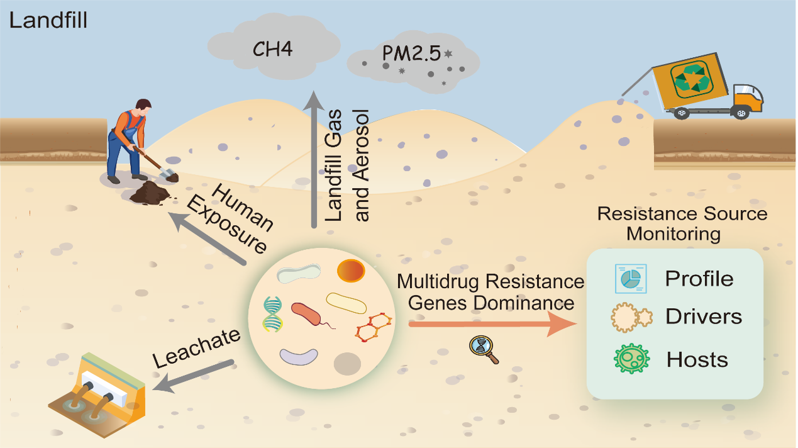

课题组关于填埋场源抗生素耐药性特征的工作被 Environmental Science & Technology 录用
课题组以 “Landfills as Hotspots of Multidrug Resistance Genes: Profiles, Drivers, and Hosts” 为题发表研究成果，聚焦垃圾填埋场固体垃圾内部抗生素抗性基因的赋存特征、关键影响因子及其微生物宿主。

研究选取某大型垃圾填埋场，通过宏基因组与定量 PCR 技术系统解析了不同区域与深度垃圾样品中 ARGs 的分布规律、宿主来源及关键驱动因子。结果显示，多重耐药基因（MDRGs）占据主导地位，平均占比达 39.78%，并与质粒等可移动遗传元件紧密关联。
研究进一步识别出 Pseudomonas、Acinetobacter 和 Brevundimonas 为 MDRGs 的主要宿主，并揭示 MGEs、MRGs、微生物宿主与环境因子共同构成的复杂驱动网络，为从源头制定抗生素耐药性风险管理策略提供了科学依据。